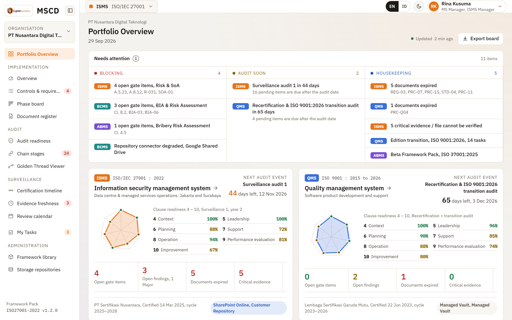
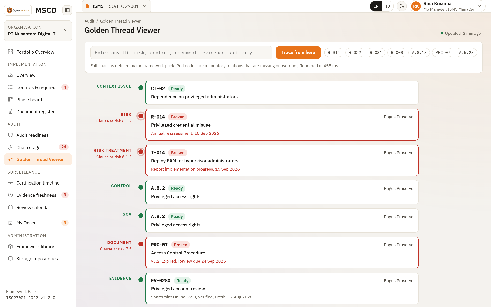
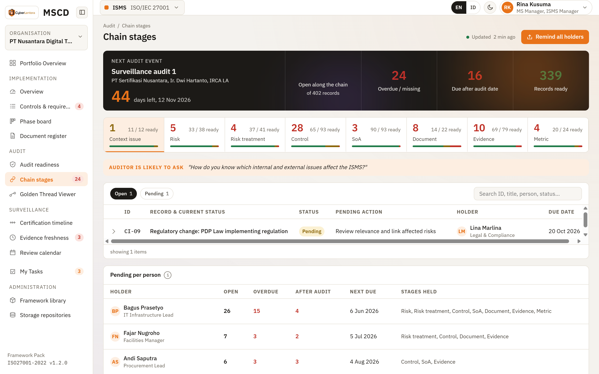
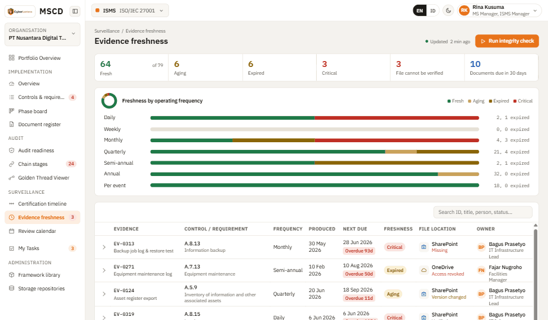
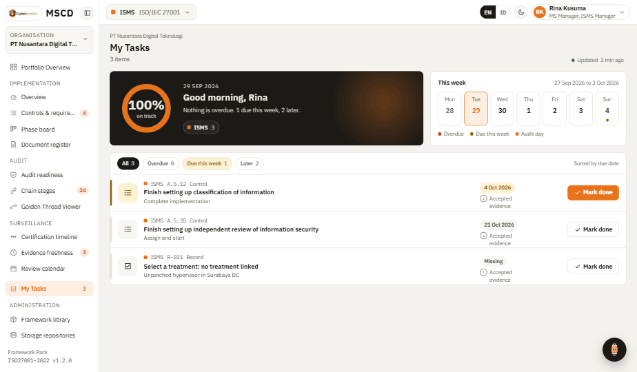
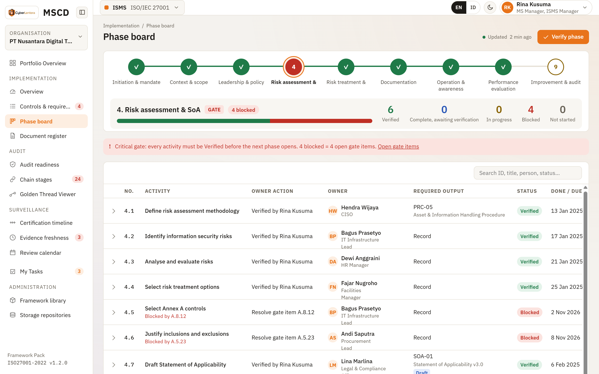
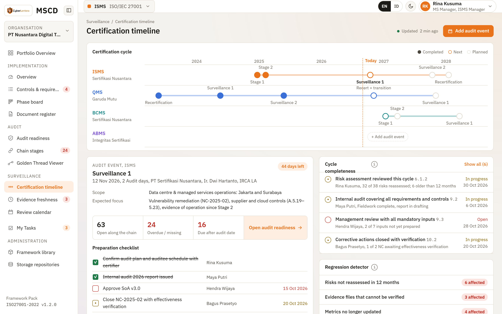
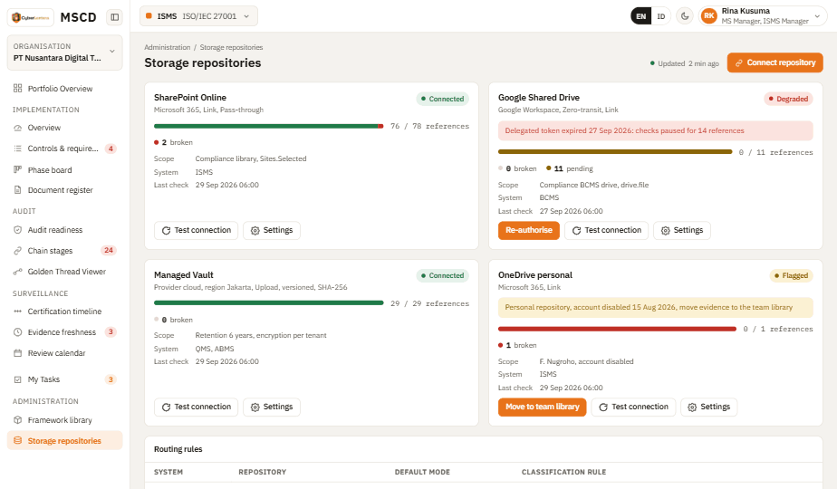

SaaS or your data centre, files in your own repository, controls in place.
07
Approach, roles and team
Who does what, how we govern the work, who you will meet, support after go-live.
08
Success, commercials, next steps
Indicators, the two-stage commercial structure, assumptions, risks, acceptance.
Appendices
A. How MSCD features map to the standard. B. Terms used in this proposal.
01Executive summary
WHAT YOU TOLD US
Two audits, two kinds of pain
This year's internal audit means chasing evidence by email. Next year's external audit means weeks of preparation that still leaves gaps.
THE ROOT CAUSE
Links live in heads and spreadsheets
Requirement to risk to control to document to evidence. When these drift apart, nobody can answer "are we ready" without a round of meetings.
WHAT CHANGES
The links become data
Every requirement has a named owner, a document and dated evidence. A broken link becomes a task with a person and a due date, visible to everyone.
One traceability chain as MSCD keeps it. Green is ready, amber is pending before the audit, red is a break with a named holder.
STAGE 1
Your internal audit, on the platform
Ten weeks. Configuration for your scope, your registers loaded, one full internal audit run with our lead auditor beside your team. You end with the report, findings inside the corrective action workflow, and effort data against your last cycle.
STAGE 2
Same records, external audit ready
If Stage 1 convinces you. The preparation window opens sixty days before the audit date, the checklist is generated from the framework pack, and every item due after the audit is flagged the moment it is created. Nothing gets rebuilt.

Portfolio Overview. Every management system in one view, with what needs attention first.
What you commit to in Stage 1. One management system manager for roughly two days a week during configuration, one IT contact for single sign-on and repository access, and the department heads who normally supply evidence. Files can stay in your SharePoint or Google Drive. The platform stores references and version fingerprints; it copies files only if you choose the managed vault.
02Your situation as we understand it
Certification runs on a three-year cycle. After the certificate is issued, the certification body returns for surveillance audits in years one and two and a recertification audit in year three. Internal audits sit inside that cycle as the organisation's own check, and clause 9.2 requires that they cover every requirement at planned intervals.
Stage 1 here
Certificate
year 0
Stage 2 here
Surveillance 1
year 1
Surveillance 2
year 2
Recertification
year 3
Internal audit
Internal audit
Internal audit
The three-year certification cycle. Stage 1 runs your internal audit; Stage 2 prepares the surveillance or recertification audit that follows.
From our conversations, the current internal audit runs like this. The coordinator holds a kick-off, agrees a schedule with each department, and requests evidence by email. Evidence arrives as attachments or lands in a shared folder. The auditor works through a spreadsheet checklist, writes findings into a report, and follow-up happens through more email and meetings until each finding is declared closed. The pattern does get organisations through audits. It also has a few costs that repeat every year.
Status lives with the coordinator
Management cannot see readiness without asking for a summary. When the coordinator is away, the status goes with them.
Evidence spread across mailboxes and folders
The same evidence is requested twice. During the external audit, someone searches for the file while the auditor waits.
Reminders are manual
In the organisations we have worked with, roughly a third of requests need more than one reminder, and the people who chase are the same people who should be reviewing.
Findings closed without effectiveness checks
The same finding reappears at the next audit with a different number.
For the external audit next year, the concern is preparation time. Assembling an evidence pack by hand typically takes a team two to three weeks and still leaves gaps that only surface when the auditor asks. In our experience many of those gaps are items that did have a due date, just one that fell after the audit.
Success criteria we propose to measure
1Every requirement in scope has a named owner, an implementing document and operating evidence traceable from risk to evidence in under thirty seconds.
2The coordinator sees pending items, their holders and their due dates from one screen without sending a summary request.
3The external audit is prepared without searching for evidence on the day.
4Management receives a readiness view that names the specific gaps behind the percentage, and you have enough data to judge how promptly each unit contributes.
We will confirm and baseline these during the first two weeks of Stage 1 so that the comparison at the end of the cycle is fair.
03How MSCD works
3.1 The traceability chain
Most audit findings come from a broken link between artefacts. A risk with no treatment. A control implemented in 2024 whose last evidence is from 2024. A procedure everyone follows but whose approved version expired in March. MSCD models the chain as data, so these breaks are detected by the system whether or not anyone is looking.
CONTEXT
CI-02
RISK
R-014
CONTROL
A.8.2
SOA
A.8.2
DOCUMENT
PRC-07
EVIDENCE
EV-0280
METRIC
M-02
R-014 Annual reassessment overdue since 10 Sep. Held by B. Prasetyo.
PRC-07 Review date passed on 24 Sep. Every control it implements is held back.
EV-0280 Aging. Next evidence due 14 Oct, before the audit.
One chain for ISO/IEC 27001, rendered from live records. Green nodes are ready, amber are pending before the audit, red are broken and show who holds them.
For ISO/IEC 27001 the chain runs from context issue to risk, risk treatment, Annex A control, Statement of Applicability entry, document, evidence and metric, then on to findings and corrective actions. ISO 9001, ISO 22301 and ISO 37001 each carry their own chain definition inside their framework pack. The engine is the same in every case.

Golden Thread Viewer. Enter any identifier and the full chain renders. Red nodes are mandatory relations that are missing or overdue, with the clause at risk.
3.2 Three working areas
IMPLEMENTATION
Build and maintain
Phase board with gate enforcement, controls and requirements with status and evidence, document register, clause readiness.
MS Manager, department heads
AUDIT
Run the audit
Next audit panel, traceability test, open items per chain stage, pending per person, finding register, corrective action workflow.
MS Manager, Internal Auditor
SURVEILLANCE
Keep the certificate
Three-year timeline, evidence freshness against operating frequency, review calendar, cycle completeness, regression detector.
MS Manager, Top Management
3.3 Named accountability
Every pending item carries a named person as well as a role. The role explains why someone holds the item. The name tells you who to call. Items without a holder appear as Unassigned and count against readiness. The Pending per person view sorts holders by overdue items and turns audit preparation into short one-to-one conversations instead of a coordination meeting.

Chain stages. Each stage shows open records, the action pending, the holder and the due date. The After audit flag marks items that will not be ready on audit day unless the date moves.
3.4 Evidence that stays fresh
Each control has an operating frequency. Evidence age is calculated from the date the evidence was produced. The upload date is ignored. A monthly control whose last evidence is ninety days old is downgraded to partially implemented until current evidence is linked, and the owner receives a task. When files live in your own repository, the platform pins the file version and records the provider's hash, then checks every reference on a schedule. A file that was moved, renamed or deleted is treated the same way as expired evidence.
Monthly control, evidence age in days
Fresh, to 31 d
Aging
Expired, to 60 d
Critical, over 60 d
031386090+
The control drops to Partial from day 39 and returns to Implemented when current evidence is linked.
Freshness thresholds for a monthly control. Thresholds are configurable per tenant and per framework.

Evidence freshness. Distribution by operating frequency, and each record with its production date, next due date and file integrity status.
3.5 Department heads see tasks, not clause numbers
The people who supply most of the evidence are the ones least interested in clause numbers. My Tasks gives them one list across all management systems, in plain language, with examples of what counts as acceptable evidence and a single submit button. The framework marker is small enough to ignore.

My Tasks for a department head. Overdue first, then this week, then later.
04Stage 1: your internal audit on MSCD
4.1 Scope
One management system
One certification scope, typically the ISO/IEC 27001 ISMS. Additional systems come in Stage 2 or by separate agreement.
Platform and pack
MSCD on SaaS in the Jakarta region, or on your infrastructure. Framework pack for the chosen standard at its current edition.
Your registers loaded
Document register, risk register, Statement of Applicability, previous findings and the list of owners, cleaned and mapped with your MS Manager.
Connected to what you already use
Single sign-on with your identity provider. Connector to the SharePoint library or Google Shared Drive where evidence already lives.
The audit itself
One full internal audit cycle through the platform. Our lead auditor works alongside your internal auditor and can act as co-auditor.
Training and reporting
Role-based sessions in Bahasa Indonesia or English. Audit report and management review inputs generated from the platform, plus an effort comparison against your baseline.
4.2 Eleven weeks
The plan assumes SaaS. On-premise adds four to six weeks for installation, mostly waiting on infrastructure.
Mobilise, discover
wk 1
Baseline, migration list
Design
wk 3
Configuration design
Configure, load
wk 5
Acceptance test passed
Run the internal audit
wk 7
Audit report, findings in workflow
Review
wk 11
Decision
Weeks 1 to 2
Mobilise and discover
Kick-off, scope confirmation, interviews with the MS Manager and internal auditor, baseline measurement of the current audit effort, inventory of registers to migrate. You receive the project charter, the baseline report and the migration list.
Weeks 3 to 4
Design
Map organisation units, roles and owners. Agree document conventions, evidence freshness thresholds, approval flows and the repository connection. The configuration design is approved in a workshop.
Weeks 5 to 6
Configure and load
Tenant set-up, single sign-on, repository connector, data migration, functional test. Ends with a passed acceptance test and a migration report.
Weeks 7 to 10
Run the audit
Audit programme approved in the platform. Evidence requests go out through My Tasks. Review, findings and corrective actions recorded. Twice-weekly fifteen-minute stand-ups. Ends with the internal audit report and findings inside the corrective action workflow.
Week 11
Review
Effort comparison against the baseline, lessons learned, and the Stage 2 decision.

Phase board. Activities come from the framework pack. A gate phase cannot be verified while a gate item remains open, and every blocked activity names the item that blocks it.
4.3 What changes in the audit itself
Plan
Programme from clause coverage
Internal Auditor
Request
Owners get tasks with examples
Department heads
Receive
Version pinned, hash recorded
Platform
Review
Finding condition library
Internal Auditor
Correct
Root cause, action and verification
Owner, MS Manager
Report
Generated from the same data
MS Manager
Separation of duties is enforced by the platform. The verifier of a corrective action cannot be the person who implemented it, and the verification date must differ from the implementation date.
The kick-off meeting still happens. Its purpose changes from assigning work to confirming assignments the system already made based on ownership. Reminders are automatic and logged, so escalation is based on a record instead of an impression.
05Stage 2: external audit preparation
Stage 2 starts only if you choose to continue after the Stage 1 review. It runs on the same tenant and the same records. Nothing from Stage 1 is discarded, and the internal audit you ran becomes the evidence that clause 9.2 has been met.
5.1 What Stage 2 adds
TIMELINE
Certification cycle with your audit dates
Each event opens to a preparation checklist generated from the framework pack, with owners and due dates that all fall before the audit.
COMPLETENESS
Everything that must happen once per cycle
Risk assessment reviewed, performance measured, internal audit done, management review held with all mandatory inputs, corrective actions verified, document reviews on time.
REGRESSION
Detect quiet decay
Risks not reassessed in twelve months, metrics that stopped updating, evidence files that can no longer be verified, management review inputs that disappeared.
EVIDENCE PACK
Per clause and per control
When files stay in your repository, the pack is a manifest plus a copy made inside your own repository. Auditor guest access is read-only and time-boxed.

Certification timeline. Every management system on one axis, the next event with its checklist and previous findings to prove closed, cycle completeness and regression patterns.
5.2 Countdown to the audit
Months 1 to 2 after go-ahead
Load the cycle
Certification cycle, previous external findings and the certifier's audit plan loaded. Freshness monitoring and the review calendar switched on for all documents. Remaining owners onboarded.
60 days before
Preparation window opens
Weekly readiness review with the MS Manager on the Audit readiness screen. Items due after the audit date are moved earlier or escalated.
14 days before
Pack and briefing
Evidence pack generated. Auditees briefed on the expected sampling focus. Guest access prepared for the auditor.
Audit days
On site or on call
Our consultant is available. Auditor questions are answered from the Golden Thread Viewer in seconds.
After
Close the loop
Findings from the certification body enter the same corrective action workflow. Surveillance planning starts on the timeline.
The single most valuable flag. An item due after the audit date looks fine in every spreadsheet, because it is not late yet. It will still be missing when the auditor asks. MSCD computes this flag against the next audit event for each system, shows it on every list, and recalculates it automatically when the audit date changes. We recommend confirming the Stage 2 decision at least four months before the audit.
06Deployment and security
MSCD ships as one codebase with one release train. SaaS and on-premise offer the same features. The differences are operational: who runs the application and where the data sits.
CLOUD
SaaS
Provider cloud, Jakarta region
Schema per tenant, row-level security, per-tenant encryption keys
SAML 2.0 or OIDC to your identity provider, MFA for everyone
Rolling updates in announced windows
Ready in under two weeks
YOUR DATA CENTRE
On-premise
Your servers, your data centre
Kubernetes or Docker Compose, air-gapped operation supported
LDAP and Active Directory, your SMTP relay
Signed release bundles on your schedule, licence validated offline
Typically four to six weeks end to end
Where the bytes go
In either mode you can decide that documents and evidence never leave your repository. The platform keeps structured data in its own database, because the traceability engine cannot work without it. File contents stay where they are.
Your browser
MS Manager, owners
Pass-through
Link
MSCD
registers, statuses, relations, fingerprints
checksum in transit, not stored
reference and version only
Your repository
SharePoint, Drive, file share, S3
Zero-transit: the browser uploads straight to your repository, MSCD receives metadata only
Managed vault is optional. Every reference is checked on a schedule; moved, renamed or deleted files are flagged and treated like expired evidence.
Supported repositories at the start of Stage 1 are SharePoint Online and OneDrive for Business, followed by Google Shared Drive. Internal file shares and S3-compatible storage are available for on-premise installations. Personal repositories are allowed but flagged, since evidence stored in a departing employee's OneDrive disappears with the account.

Storage repositories. Connector status, routing rules per management system and classification, and the health of every file reference.
Security controls
Identity SSO through SAML 2.0, OIDC or LDAP. MFA for all users. Roles per management system.
Segregation of duties Enforced at data level. Nobody approves their own work.
Encryption TLS 1.2 or higher in transit. At rest with per-tenant keys on SaaS.
Connectors Least privilege: the designated library only. Credentials encrypted with the tenant key.
Audit trail Every change recorded and never deleted. Logs available to you and to your external auditor.
Sensitive records ISO 37001 concerns and investigations visible only to the compliance function and named investigators.
Your data stays yours
Structured data and any files in the managed vault belong to you. At any point, and in particular at the end of Stage 1, you can export registers, statuses, relations and audit trail in open formats (CSV and JSON) together with the vault contents. On SaaS, tenant data is deleted after the contractual retention period and the deletion is confirmed in writing. Framework pack content remains licensed from CyberLentera; your configuration, records and evidence do not.
Whether the chosen data placement satisfies your sector regulation is a decision for your legal and compliance function. We provide the technical documentation needed for that review.
07Approach, roles and team
We do not begin by moving everything into a new system. We begin with one management system, run one real cycle of work inside it, and expand from there. This keeps the first weeks focused on the people who will use the platform most and gives you a real result before any broader commitment.
Who does what
CyberLentera
Runs the project. Discovery, configuration design, single sign-on and connector, data migration, training, and co-auditing during weeks 7 to 10. Consulted on the Stage 1 decision.
Your sponsor
Accountable for the charter, for adoption, and for the Stage 2 decision. Chairs the steering committee. Makes the platform the only channel for submitting evidence.
Your MS Manager
Accountable for discovery, design and migration decisions, and for running the internal audit. About two days a week in weeks 1 to 6, then the daily owner of the platform.
Your IT
Accountable for single sign-on and the repository connector permission. Consulted on design and migration.
Department heads
Own the controls and supply the evidence through My Tasks. Consulted during discovery and acceptance testing.
Governance
Monthly steering committee and at stage gates. Weekly project check-in. Twice-weekly fifteen-minute audit stand-up in weeks 7 to 10. Scope changes through a short change request.
Adoption
The success of this engagement is decided by department heads submitting evidence on time. They usually have a full-time job elsewhere and little patience for compliance tooling. We train them on their actual tasks in the first week of the audit, keep My Tasks free of standard jargon, let the platform send the reminders, and ask the sponsor to make the platform the only channel for evidence. Half-adopted tools produce two sources of truth, which is worse than one spreadsheet.
The team you will meet
Engagement lead
Accountable for the outcome. Escalation point. Steering committee member. Part time.
Project manager
Planning, schedule, risks and issues, weekly reporting. Full time in Stage 1.
Solution architect
Configuration design, deployment architecture, integration and security review.
ISO lead auditor
Gap assessment, framework pack tuning, co-auditor during the internal audit, external audit coaching in Stage 2.
Implementation and integration engineers
Configuration, migration, functional test, single sign-on, connectors, notifications. Full time in build weeks.
Change and training lead
Adoption plan, training material, role-based sessions from week 5.
Profiles of the named team members are attached separately.
Support after go-live
Hypercare, weeks 7 to 11
Our team is reachable on a shared channel during working hours. Configuration adjustments raised during the audit are applied within two working days.
Standard support, Stage 2
Working days 08:00 to 18:00 WIB. Response within four working hours for issues that stop an audit activity, next working day for everything else.
Updates and packs
Application updates in announced windows on SaaS, or as signed bundles on your schedule for on-premise. New framework pack editions installed side by side and activated when you decide.
08Success, commercials and next steps
How we will measure success
We do not quote target numbers before the baseline is measured. The indicators below are what we propose to track, with targets agreed at the end of week two.
↓
Internal audit coordination effort
Working days from programme approval to report issue
↓
Time to trace a control to evidence
From minutes to seconds, measured in a simulation
↑
Evidence accepted on first submission
Share accepted by the auditor without rework
↑
Evidence submitted on time
Share of items submitted by the due date
0
Items due after the audit date
Count on audit day
0
Major nonconformities at the external audit
Stage 2, count per audit
Commercial structure
STAGE 1
Fixed fee
Platform for one management system for four months
Configuration, data loading, training, co-audited internal audit
No commitment beyond Stage 1; data export in open formats at any time
On-premise installation priced separately
STAGE 2
Annual subscription
Per management system, named users, frameworks per licence
Preparation support and audit-day presence included
Twelve months, renewable; Stage 1 records carry over
Stage 1 fee credited against the first year
Assumptions
The sponsor and the MS Manager are available for about forty percent of their time from week one to week six.
Existing registers are available electronically by the end of week two.
Your IT team grants the connector permission on your Microsoft 365 or Google Workspace tenant. If approval takes longer, the managed vault is used temporarily with your agreement.
Decisions requested in the design workshop are given within five working days.
External audit dates are set by you with your certification body. This engagement does not change them.
Legal review of data placement and of the use of individual contribution data is performed by your legal function. We recommend that contribution data is used for coordination and coaching first.
Risks and how we handle them
Evidence keeps arriving by email
Task-based training in week 7, automatic reminders, and sponsor support for a single submission channel.
Initial data quality is poor
Cleaning in weeks 1 to 2, staged migration, unverified records marked until the owner confirms them.
Connector approval is delayed
Permission request raised in week 3. Managed vault as the interim path if you agree.
Audit date is close to Stage 2 go-live
Stage 2 decision at least four months before the audit. The Stage 1 internal audit already covers clause 9.2.
Why CyberLentera
We build and operate security software, and we implement ISO management systems. The two experiences rarely sit in the same team. It matters here because what we are proposing is a way of working for your MS Manager, your internal auditor and your department heads, with software underneath it. The people who configure the platform are the same people who understand what an auditor will ask. Support and training are in Bahasa Indonesia, and we know the certification bodies operating in Indonesia. Team credentials, project references and customer contacts are provided in the attached profile.
NEXT STEPS
1
Ninety-minute working session
With your MS Manager and internal auditor, to confirm the scope of the first internal audit cycle and the repository you use for evidence.
2
Two decisions
SaaS or on-premise, and which identity provider we connect to.
3
Start date
We can mobilise within two weeks of signature. A live demonstration on your own risk register takes about forty-five minutes.
Stage gates and acceptance
End of week 6
Configuration accepted when the acceptance test passes and the MS Manager confirms that migrated registers match the source. Corrections before this point are included.
End of week 11
Stage 1 is complete when the internal audit report has been issued from the platform and the closure report, including the effort comparison, has been presented to the sponsor.
Acceptance of this proposal
Confirmation of the scope of Stage 1 as described in section 4.
For PT TASPEN (Persero)
Name, position, date
For CyberLentera
Name, position, date
AHow MSCD features map to the standard
The clauses below are the core Harmonized Structure clauses common to ISO/IEC 27001, ISO 9001, ISO 22301 and ISO 37001. Detailed numbering for each edition is carried in the framework pack.
Clause
Topic
Supporting feature
4.1, 4.2
Context and interested parties
Context issue and interested party registers, referenced by risks
4.3
Scope
Scope per management system, exclusions justified
5.1, 5.3
Leadership and roles
Named owner for every item, segregation of duties
6.1
Risks and opportunities
Risk register with owners, treatments and residual acceptance
6.2
Objectives
Measurable objectives linked to metrics
7.2, 7.3
Competence and awareness
Training records and competence evidence
7.5
Documented information
Document register with version, approval, review date and file location
8.1
Operational planning and control
Operating evidence with freshness against control frequency
Mandatory inputs per standard and a completeness check
10.2
Nonconformity and corrective action
Corrective action workflow with root cause analysis and effectiveness verification
BTerms used in this proposal
MS Manager
The day-to-day owner of a management system. ISMS Manager for ISO/IEC 27001, QMS Manager for ISO 9001, and so on.
Department head
The owner of a work area who operates controls and supplies evidence. Called Domain Owner in the platform.
Evidence
A record showing that a control or requirement operated, such as a report, a log export or a signed form.
Traceability chain
The linked path from context issue and risk through control, document and evidence to finding and corrective action.
Framework pack
The versioned content package for one standard and edition: clause structure, control catalogue, activity templates, finding conditions and labels.
Gate
A phase that must be fully verified before the next phase opens. For ISO/IEC 27001 this is risk assessment and the Statement of Applicability.
Repository
Where files live. SharePoint, OneDrive, Google Drive, an internal file share, or the managed vault.
Surveillance
The certification body's audit in years one and two of the cycle. Recertification is the year three audit.
This proposal does not replace the official text of any ISO standard. Features that help meet a requirement do not by themselves guarantee conformity; that judgement remains with the auditor and the certification body.